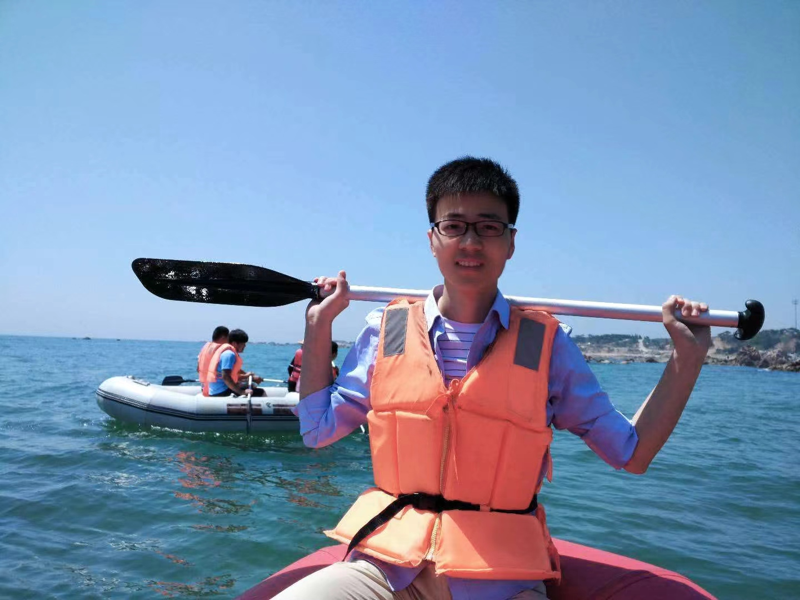

Original
Edited
Chat-Edit-3D++
Edit a 3D or 4D scene through conversation. Compare the original lake view with its ukiyo-e edit from the Chat-Edit-3D demo.
方双康
I work on physics-based 3D reconstruction and simulation, embodied intelligence, and large language models.

I received my Ph.D. in communication and information systems at Beihang University, supervised by Wenrui Ding and Yufeng Wang. I also receive academic guidance from Ming-Hsuan Yang and Takeo Igarashi.
My earlier work spans neural implicit representations, 3D scene editing, image captioning and model quantization. At Megvii and StepFun I worked with Yi Yang and Shuchang Zhou.
Haidian District, Beijing, ChinaEdit a 3D or 4D scene through conversation. Compare the original lake view with its ukiyo-e edit from the Chat-Edit-3D demo.
Can a language model connect a set of vertices into a recognizable shape? This illustrated dialogue recreates the shark example from the paper.
Transfer a scene between NeRF architectures. Watch the divider sweep across the Lego model to compare training from scratch with distillation from a hash-grid teacher.